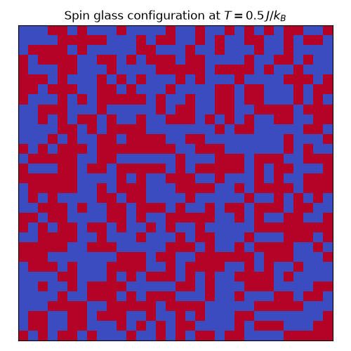
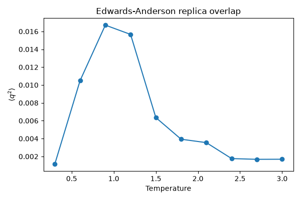
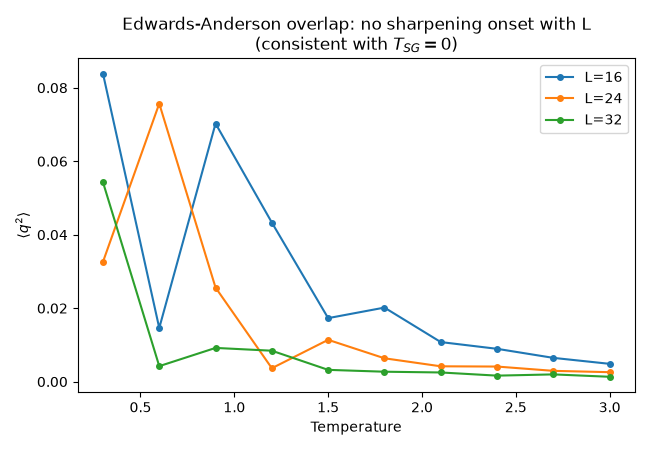

Note
Go to the end to download the full example code.
Spin glasses: frustration and the Edwards-Anderson order parameter#
A ferromagnet’s bonds all agree on which alignment lowers energy. A spin glass’s bonds are quenched random variables – some ferromagnetic, some antiferromagnetic – so a generic plaquette is frustrated: no spin configuration can satisfy all four of its bonds simultaneously. The Edwards-Anderson model uses the same Ising Hamiltonian form as a ferromagnet, but with random bond couplings on a periodic \(L \times L\) lattice:
where each nearest-neighbor bond \(J_{ij}\) is independently fixed (“quenched”) to \(+J\) or \(-J\) before the simulation starts and \(s_i = \pm 1\). The result is a rugged energy landscape riddled with local minima rather than one clean ground state, and a phase transition that conventional magnetization cannot detect.
Edwards and Anderson’s 1975 fix was to compare two independently thermalized replicas, \(s^{(1)}\) and \(s^{(2)}\), evolving under the same quenched disorder \(\{J_{ij}\}\). Their overlap
fluctuates around a nonzero value below the spin-glass transition, where both replicas freeze into the same disorder-selected (if disordered) pattern, even though the ordinary magnetization stays zero throughout. This example uses the mean-squared overlap \(\langle q^2 \rangle\) as the spin-glass order parameter.
import matplotlib.pyplot as plt
import numpy as np
from physicskit.statphys.chapters.spin_glass import EdwardsAndersonSpinGlass2D
from physicskit.statphys.visualizers.lattice_render import plot_spin_grid
Frustrated plaquettes in a random-bond sample#
An \(L=32\) lattice with bond magnitude \(J=1.0\) (each bond independently \(+J\) or \(-J\)) is generated; a plaquette is frustrated when the product of its four surrounding bonds is negative, which happens for about half of all plaquettes regardless of the spin configuration.
model = EdwardsAndersonSpinGlass2D(L=32, J=1.0, seed=0)
print(f"Frustrated plaquette fraction: {model.frustration_density():.3f} (expected ~0.5 for +/-J bonds)")
model.sweep(beta=2.0, n_sweeps=500)
fig, ax = plt.subplots(figsize=(5, 5))
plot_spin_grid(model.spins, ax=ax, title="Spin glass configuration at $T=0.5\\,J/k_B$")
plt.tight_layout()

Frustrated plaquette fraction: 0.504 (expected ~0.5 for +/-J bonds)
The Edwards-Anderson order parameter versus temperature#
Because 2D +/-J spin glasses have no finite-temperature transition (\(T_{\text{SG}} = 0\)), \(\langle q^2 \rangle\) should decay smoothly toward 0 as \(T\) increases rather than showing a sharp transition – in contrast to the sharp Ising ferromagnetic transition, and a useful point of comparison with the Ising examples.
temperatures = np.linspace(0.3, 3.0, 10)
q2_values = []
for T in temperatures:
q2 = model.edwards_anderson_order_parameter(beta=1.0 / T, n_equil=150, n_measure=150)
q2_values.append(q2)
plt.figure(figsize=(6, 4))
plt.plot(temperatures, q2_values, marker="o")
plt.xlabel("Temperature")
plt.ylabel(r"$\langle q^2 \rangle$")
plt.title("Edwards-Anderson replica overlap")
plt.tight_layout()

No sharp finite-size onset: repeating the sweep at several L#
A genuine finite-temperature transition would sharpen into a more and more abrupt onset as L grows, the way the Ising ferromagnetic transition does elsewhere in this gallery. The 2D +/-J Edwards-Anderson glass is believed to order only at \(T_{\text{SG}}=0\), so repeating the same overlap measurement at several lattice sizes should instead show curves that stay close together and smoothly decaying at every L, with no growing sharpness – itself the qualitative signature that distinguishes a T=0 transition from a conventional finite-T one.
L_values = [16, 24, 32]
plt.figure(figsize=(6.5, 4.5))
for L in L_values:
size_model = EdwardsAndersonSpinGlass2D(L=L, J=1.0, seed=0)
q2_L = [size_model.edwards_anderson_order_parameter(beta=1.0 / T, n_equil=150, n_measure=150) for T in temperatures]
plt.plot(temperatures, q2_L, marker="o", ms=4, label=f"L={L}")
plt.xlabel("Temperature")
plt.ylabel(r"$\langle q^2 \rangle$")
plt.title("Edwards-Anderson overlap: no sharpening onset with L\n(consistent with $T_{SG}=0$)")
plt.legend()
plt.tight_layout()
plt.show()

Total running time of the script: (0 minutes 0.501 seconds)